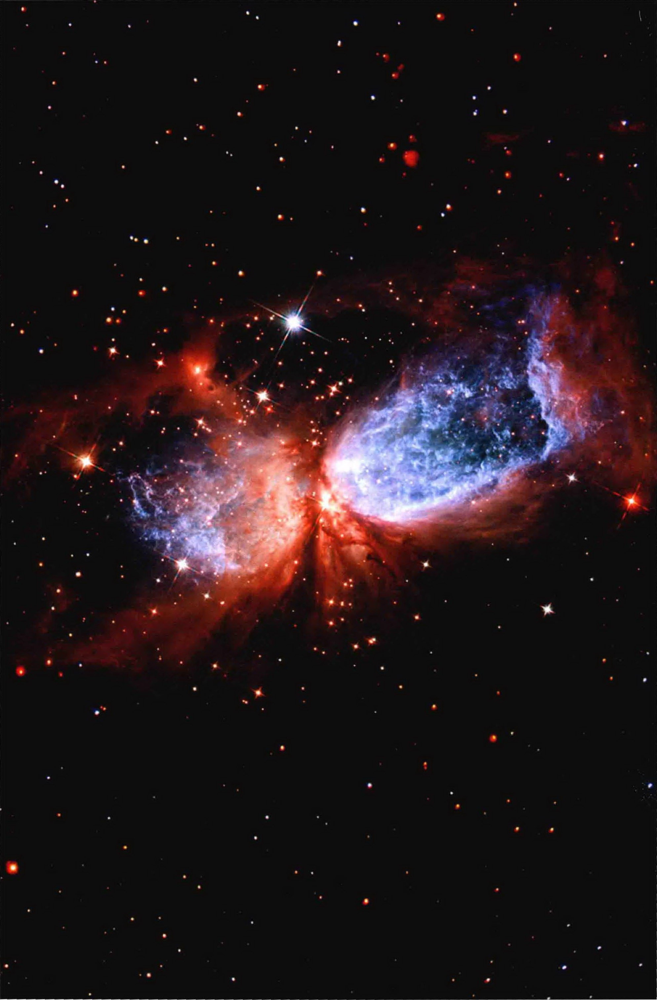
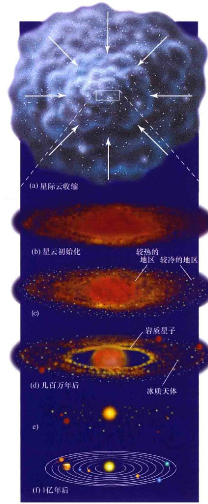
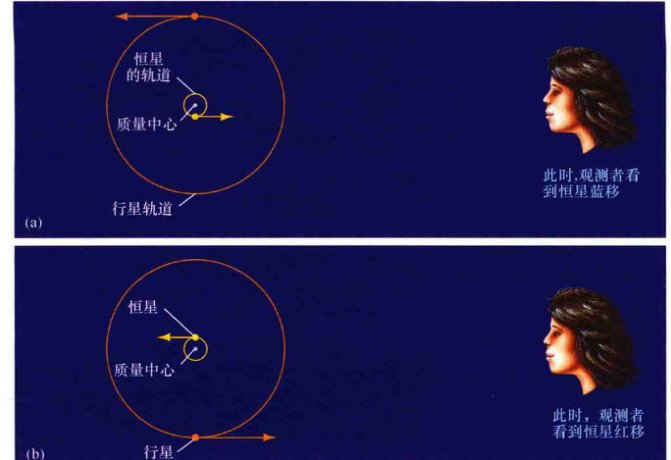
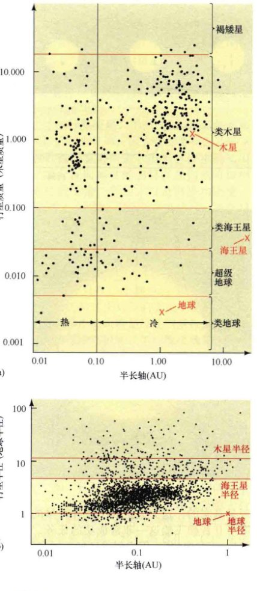
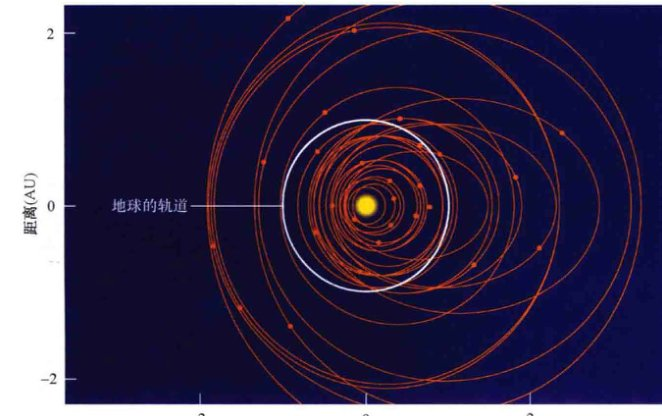
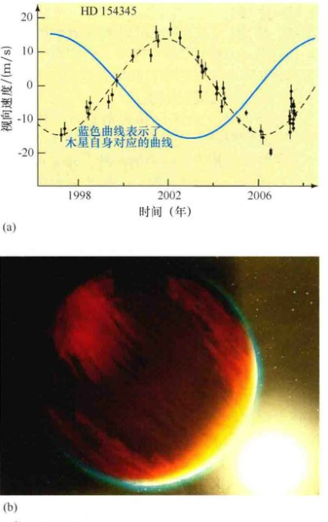
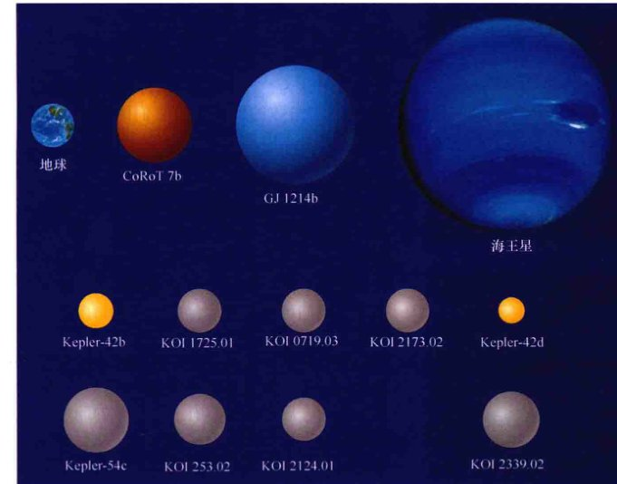

<style>
    /* 沉浸式阅读体验设计 */
    :root {
        --primary-color: #34495e;
        --secondary-color: #e74c3c;
        --accent-color: #3498db;
        --background-color: #ffffff;
        --text-color: #2c3e50;
        --sidebar-bg: #fdf2e9;
        --sidebar-border: #d35400;
        --box-bg: #ecf0f1;
        --font-main: -apple-system, BlinkMacSystemFont, "Segoe UI", Roboto, "Helvetica Neue", Arial, sans-serif;
    }

    body {
        font-family: var(--font-main);
        line-height: 1.8;
        color: var(--text-color);
        max-width: 800px;
        margin: 0 auto;
        padding: 40px 20px;
        background-color: var(--background-color);
    }

    /* 章节单元 */
    .chapter-unit { margin-bottom: 80px; }

    /* 标题体系 */
    h1 {
        font-size: 2.8em;
        color: #c0392b; /* 对应原书红色标题 */
        border-bottom: 4px solid var(--secondary-color);
        padding-bottom: 15px;
        margin-top: 0;
        margin-bottom: 10px;
        letter-spacing: -0.02em;
    }

    .chapter-subtitle {
        font-size: 1.6em;
        color: #e67e22; /* 对应原书副标题橙色 */
        display: block;
        margin-bottom: 40px;
        font-weight: 300;
    }

    h2 {
        font-size: 1.8em;
        color: var(--primary-color);
        margin-top: 50px;
        border-left: 6px solid var(--accent-color);
        padding-left: 15px;
        background: linear-gradient(90deg, #f0f4f8 0%, rgba(255,255,255,0) 100%);
        padding-top: 5px;
        padding-bottom: 5px;
    }

    h3 {
        font-size: 1.4em;
        color: #16a085;
        margin-top: 35px;
        border-bottom: 1px dashed #bdc3c7;
        padding-bottom: 5px;
    }

    /* 正文 */
    p { margin-bottom: 1.5em; text-align: justify; }
    
    strong { color: #2c3e50; font-weight: 700; }

    /* 列表 */
    ul, ol { margin-bottom: 1.5em; padding-left: 25px; }
    li { margin-bottom: 0.8em; }

    /* 侧边栏与特殊区域 */
    .sidebar {
        background: var(--sidebar-bg);
        padding: 25px;
        border-left: 5px solid var(--sidebar-border);
        margin: 35px 0;
        border-radius: 0 8px 8px 0;
        box-shadow: 2px 2px 10px rgba(0,0,0,0.05);
    }
    .sidebar-title {
        display: block;
        font-size: 1.2em;
        font-weight: bold;
        color: #d35400;
        margin-bottom: 15px;
        text-transform: uppercase;
        letter-spacing: 0.05em;
    }

    .feature-box {
        background: #f4f6f7;
        border: 1px solid #d5d8dc;
        padding: 25px;
        margin: 40px 0;
        border-radius: 8px;
    }
    .feature-box h3 { 
        margin-top: 0; 
        color: #2c3e50; 
        border-bottom: 2px solid #34495e;
        display: inline-block;
    }

    /* 习题与测试 */
    .exercises {
        background: #fffcf0;
        padding: 30px;
        margin: 50px 0;
        border: 2px solid #f1c40f;
        border-radius: 12px;
    }
    .concept-check {
        background-color: #e8f8f5;
        border-left: 5px solid #1abc9c;
        padding: 15px 20px;
        margin: 25px 0;
        color: #0e6251;
        font-weight: 500;
    }
    .concept-check::before {
        content: "✅ 概念理解检查";
        display: block;
        font-weight: bold;
        margin-bottom: 8px;
        color: #16a085;
    }

    /* 视觉元素 */
    .image-placeholder {
        background: #f8f9fa;
        border: 2px dashed #cbd5e0;
        display: flex;
        flex-direction: column;
        align-items: center;
        justify-content: center;
        margin: 30px auto 15px auto;
        color: #718096;
        font-family: monospace;
        font-size: 0.9em;
        padding: 20px;
        position: relative;
        overflow: hidden;
    }
    .image-placeholder::before {
        content: "🖼️ 图像区域 " attr(data-bbox);
        font-weight: bold;
        margin-bottom: 10px;
    }
    .caption {
        font-size: 0.9em;
        color: #636e72;
        text-align: center;
        margin-bottom: 40px;
        padding: 0 10%;
        line-height: 1.5;
    }
    .caption strong { color: #c0392b; }

    /* 响应式调整 */
    @media (max-width: 600px) {
        body { padding: 20px 15px; }
        h1 { font-size: 2.2em; }
        h2 { font-size: 1.5em; }
    }
</style>
<article class="chapter-unit">
<!-- 封面图占位 -->

<span>封面图：蚂蚁星云 (Mz 3)</span>
</div>
<h1>第15章 系外行星</h1>
<span class="chapter-subtitle">太阳系之外的行星系统</span>
<aside class="sidebar">
<span class="sidebar-title">学习目标</span>
<p>本章的学习将使你能够：</p>
<ol>
<li>列出了太阳系的一些规则和不规则的方面，并利用本书介绍的凝聚理论进行解释。</li>
<li>描述天文学家用于探测太阳系外行星的技术。</li>
<li>概述已知的太阳系外行星的性质，并列出了一些在太阳系中没有的系外行星的类别。</li>
<li>解释太阳系外行星与目前的太阳系形成理论有哪些相符之处。</li>
<li>解释地球自转轴的倾斜如何导致季节变化，以及季节为何随着时间在改变。</li>
<li>介绍目前对太阳系外宜居的类地行星的观测证据。</li>
</ol>
</aside>
<p>太阳系的行星、卫星和小天体为我们提供了一个关于有趣的特征和奇异的特性的长长清单。每个天体都有它的特性，其中一些是因为特殊情况，其他的则是行星演化的结果。每当有新的发现出现，我们总能多学一点有关我们行星系统的历史的知识，并改进太阳系形成和演化的理论。</p>
<aside class="sidebar">
<span class="sidebar-title">知识全景</span>
<p>我们的太阳系形成于约45亿年前——那个时代太古老了，几乎不可能重建这一壮丽事件的细节。讽刺的是，现在是远离我们的其他行星系统在帮助我们破译自己的起源——就像罗塞塔石碑一样。正如太阳系八颗行星的比较行星学可以指导我们了解地球的历史，太阳系外行星看起来在关于我们是怎么来的方面有许多可以供我们借鉴的。</p>
</aside>
<h2>15.1 模拟行星的形成</h2>
<p>行星及其卫星的起源是一个复杂的、目前尚未完全解决的难题，虽然对所涉及的过程的基本轮廓已有大致了解（3.6节）。我们太阳系形成阶段的大部分知识来自对星际气体云、坠落的陨石和月球的研究，以及对地面望远镜和空间探测器所观测到的各种行星的研究。讽刺的是，对地球本身的研究并没有多大帮助，因为我们地球的早期阶段的信息在很久以前就消失了。陨石和彗星提供了也许是最有用的信息——它们几乎都在其中保存了最早期时代的固体和气体物质的痕迹。</p>
<p>直到20世纪90年代中期，行星系统的形成理论几乎完全集中在我们自己的太阳系中，因为天文学家并没有其他行星系统作为例子来测试他们的想法。然而，现在一切都改变了。今天，天文学家已经发现了数以千计的<strong>系外行星</strong>——绕着其他恒星而不是太阳旋转的行星——来挑战他们的理论。到2013年中期，我们知道了将近900个“官方的”系外行星——它们都得到了很好的观测，相关性质也被很好地测量了。此外，还有2500个可能的“候选体”仍有待进一步证实。正如我们将看到的，迄今为止发现的系外行星系统具有广泛的特性，许多与我们自己的完全不同，可能要求我们重新思考我们的恒星和行星形成的理论。</p>

<div class="caption" style="text-align: right; clear: right;">
<strong>图15.1 太阳系外行星</strong><br/>
        太阳是一颗恒星、一颗非常炽热的气体球，大多数已知的太阳系外行星相对于母星的光芒而言太暗弱了，因而难以被探测到。然而，在这个名为2M1207的系统中，母星（中央）本身非常暗弱——是一颗所谓的褐矮星——允许行星（左下）在红外波段被探测到。这个行星的质量大约是木星的5倍，距离母星55AU，距我们230光年。[ 欧洲南方天文台 (ESO) ]
    </div>
<p>图15.1是有史以来获得的太阳系外行星的第一幅图像，由建在智利的欧洲甚大望远镜拍摄，展示了一个我们的近邻系统，其中包含一颗质量为木星质量数倍的行星。天文学家希望，对太阳系外行星系统的多样性的研究能更深入地揭示我们太阳系的形成，以及为什么地球会成为宇宙中一个孕育出生命的地方。</p>
<p>然而，我们要认识到，虽然我们现在知道了很多系外行星，但我们对它们的详情知之甚少——只有估计出来的轨道和质量，一小部分可能有零散的组成方面的数据。因此，我们先回顾与我们了解得最详细的行星系统——太阳系符合得最好的理论，再由此开始我们对行星系统的研究。然后，我们通过在4~11章我们收集的太阳系的数据，补充凝聚理论的更多细节。最后，我们将准备面对凝聚理论以及快速增长的系外行星系统的列表，以评估这一理论如何包含新的观测数据。（1.2节）</p>
<p>图15.2总结了我们之前在第3章进行的关于我们的行星系统形成阶段的讨论（3.6节、3.7节）。这里，凝聚理论沿如下主要阶段引导了太阳系的形成：</p>
<ol type="a">
<li>一团星际云——实际上比最终产生的行星系统要大很多——开始收缩。随着云的坍缩，它旋转得越来越快——因为角动量守恒，并开始趋于扁平。（详细说明3-1）</li>
<li>到此时，它缩小到直径约100 AU，太阳星云形成了一个扩展的、旋转的盘。温度在中心最高，靠近红色的原始太阳，而在边缘最冷。</li>
<li>尘埃颗粒充当凝结核，物质团块相撞，粘在一起，并成长为月球大小（或者更大）的<strong>星子</strong>。颗粒和星子的成分依赖于在星云中的位置：中心附近是岩质的，更远的地方是冰质的。</li>
<li>经过数百万年，正在形成的太阳吹出的强烈的太阳风吹开了气体星云。但在太阳系外围，一些大质量的星子已经从星云中吸附了大量的气体。</li>
<li>随着气体的吹出，太阳系内部的星子不断地碰撞和成长，形成类地行星。外围的类木行星也已经形成，而太阳已经成为一颗恒星。</li>
<li>在1亿年左右的过程中，大多数星子要么结合在一起，要么被抛出，留下了几颗大的行星在近似圆形的轨道上绕太阳运行。</li>
</ol>

<div class="caption" style="text-align: left; clear: left;">
<strong>图15.2 太阳系的形成</strong><br/>
        行星形成的凝聚理论被艺术化地描绘在了上图中，从顶部星际云的收缩到底部新出现的行星系统。上一页的文字中的编号和本图中的编号对应。凝聚理论被用来解释我们的太阳系所观测到的特性。现在，天文学家们有机会用对宇宙中其他地方的行星系统的观测来对这一理论进行检验。
    </div>
<h2>15.2 太阳系的规则性和不规则性</h2>
<p>凝聚理论很自然地解释了在第3章中列出和讨论的太阳系的8个“特征”（3.6节）即：</p>
<ol>
<li>每颗行星在空间中相对独立；</li>
<li>行星的公转轨道几乎是圆的；</li>
<li>在同一平面内；</li>
<li>方向与太阳自转方向相同。</li>
</ol>
<p>这四条是星云的形状和转动的直接结果。星子通过星云而长大，每个原行星最终扫荡了靠近它的物质，解释了行星之间的间隔很大——即使该理论并不能完全解释间隔的规律性。</p>
<ol start="5">
<li>星云的变热和太阳的最终点燃，导致了所观测到的差异；</li>
<li>并且吸积-分裂过程形成的碎片很自然地解释了小行星；</li>
<li>柯伊伯带；</li>
<li>和奥尔特云的彗星。</li>
</ol>
<p>重要的是，在太阳系外行星系统的大背景下，要认识到刚才描述的理论有坚实的物理基础，其各个方面被认为在早期——即行星形成阶段，适用于所有的恒星。换句话说——至少从广义上——我们应该期望所有系外行星系统共享这些综合特征。</p>
<p>凝聚理论是演化理论的一个例子，演化理论描述了太阳系的发展、作为一系列渐进的和自然的步骤，由可以理解的、确定的物理原理有序地决定。演化理论可能会与<strong>灾变理论</strong>进行对比，灾变理论用意外或不确定的天体事件来解释观测。这种理论的一个很好的例子是<strong>碰撞假说</strong>，想象这些行星是一颗路过的恒星，因与太阳的近距离接触而从太阳上被撕扯出来。这个假说在19世纪时有着一定程度的普及，部分原因是星云理论无法解释太阳系的一些观测特征，但今天已经没有科学家再相信它了。除了特别极端的情况*，碰撞假说完全无法解释轨道、自转、行星和它们的卫星的组成。</p>
<p style="font-size: 0.85em; color: #7f8c8d;">* 一个简单的计算表明，一颗类似太阳的恒星如果要和另一颗恒星近距离接触，平均大概不得不等待超过100亿亿年——大约是宇宙年龄的1亿倍。</p>
<p>星云—凝聚理论很大程度上因为“预测”了刚才讨论的太阳系的常规性质而被建立。但除了它的许多规则性的东西外，我们的太阳系也有许多显著的不规则性，正如我们在前面的章节中多次看到的。虽然还远远不能威胁我们的理论，但是，这些不规则性却是很重要的事实，让我们考虑修正这一理论。例如，对于太阳系的解释不能坚持要求所有行星自转方向相同，或只有顺行的卫星，因为这不是我们所观测到的。相反，太阳系的理论应该对观测到的行星的特性提供强有力的解释，同时又要具有足够的灵活性，能允许误差和解释误差。当我们试着去了解所观测到的系外行星的不同特性时，凝聚理论的这个方面甚至会变得更加重要。</p>
<p>在凝聚理论中，容纳不完美——偏离秩序井然的体系——的可能性的能力是由固化在星子形成原行星的过程中的随机性提供的。总体而言，科学家们尽量不使用“概率”来解释宇宙，但在很多情况下，随机事件确实是确定太阳系目前状态的关键。由于大天体的数量减少，它们的质量增加，单独的碰撞事件展示出了越来越大的重要性。这些事件的影响直到今天在太阳系的许多地方仍然可以看到，例如，我们迄今研究的许多卫星上的大的撞击坑。许多大尺度行星的特征都被认为是由下列一些随机事件造成的：</p>
<ul>
<li>两个大型天体可能合并形成金星，导致它异常低的自转速率。（6.2节）</li>
<li>地-月系统可能是由原地球与一个火星大小的天体之间的碰撞形成的。（5.8节）</li>
<li>稍晚一些的与一个大星子的碰撞可能导致了火星奇妙的南北不对称，并抛出了火星的大部分大气。（7.4节）</li>
<li>天王星倾斜的自转轴可能由该行星形成不久后的与两个或更多的原行星发生擦撞而造成。（10.2节）</li>
<li>天王星的卫星天卫五可能已几乎被星子的碰撞所摧毁，碰撞造成了它离奇的表面地形。（10.5节）</li>
<li>类木的原行星和一个或多个星子之间的相互作用可能导致了这些行星的不规则卫星，尤其是海卫一的逆行。（10.5节）</li>
<li>冥王星-卡戎系统和其他已知的成对的柯伊伯带天体可能是这样形成的：在这些天体的大多数被类木行星的作用抛出去之前，两颗冰质星子发生了碰撞或者互相很近地掠过。（11.3节）</li>
</ul>
<p>请注意，不可能对上述说法进行任何的直接测试，但这是合理的假设——即在原行星系统形成阶段的后期，发生了一些碰撞——可以解释一些（甚至全部）前面提到的太阳系的“奇怪”的方面。并非所有的天文学家都同意所有的解释，但大多数至少接受了一部分。</p>
<p>最后，我们必须认识到，如今的太阳系所展现出来的面貌，并非全都是它在很久以前形成时就确定好了的。在超过46亿年的漫长历史中，太阳系已经有充分的时间产生显著的演化改变。在前面的章节中讨论的例子包括类地行星的大气、多颗卫星（包括地球）的同步轨道、特洛伊族小行星、光环结构和类木行星的大卫星以及冥王星与海王星的轨道共振。（4.6节、6.5节、7.6节、8.5节、9.4节、11.2节、11.3节）因此，我们可以合理地假设，许多系外行星系统也有类似的机会，在它们形成后会发生演化，然后走向不同的分叉。</p>
<div class="concept-check">
        为什么一个这样的太阳系形成理论——有关行星如何产生的要做出明确说明，但其预测又不能太死板——很重要？
    </div>
<h2>15.3 搜索太阳系外行星</h2>
<p>对任何科学理论的测试，都是看它如何容纳那些与它最初设想不同的情况。（1.2节）随着近年来众多太阳系外围绕其他恒星运转的行星的发现，天文学家们现在有机会——实际上是科学的义务——测试他们的太阳系形成理论。</p>
<p>对围绕其他恒星运转的行星的探测一直是几代天文学家的长期目标。自20世纪中叶以来，出现了许多发现太阳系外行星的声明，但1994年之前都没有被证实过，且大部分不可信。然而，自那时以来，对这个快速成长的领域的研究已经取得了巨大的进步，是现代天文学最具活力的分支之一。在大多数情况下，进步并不是由于戏剧性的科学或技术的突破，而是通过稳步的改善望远镜和探测器技术，以及用计算机进行数据分析。</p>
<p>太阳系外行星是非常暗弱的，一般接近它们的母星，靠目前的设备很难直接对它们进行探测。图15.1显示了一个邻近的系统，包含一颗比木星质量略大的行星。在这个例子中，母“恒星”（实际上是一个被称为褐矮星的恒星，将在以后讨论）恰好是非常暗弱的，所以该行星能被看到。事实上，迄今只有几十颗太阳系外行星通过直接成像被观测到了。在所有其他情况下，用于寻找行星的技术是间接的——基于对母星的光的分析，而不是对该行星本身的分析。</p>
<h3>视向速度测量</h3>
<p>图15.3说明了发现了许多太阳系外行星系统的基本探测方法。当一颗行星绕恒星运行时，引力将它扯向一边，然后是另一边，或者说，该恒星实际上是围绕它和行星的质量中心运转、会发生轻微的“摇摆”。（2.8节）行星质量越大或者恒星质量越小，恒星的运动会更强烈。如果恒星的摆动发生在沿我们的视线方向，那么我们就会看到恒星的视向速度发生微小的波动，可以利用多普勒效应进行测量。这些波动让我们可以估计行星的质量。</p>

<div class="caption">
<strong>图15.3 探测太阳系外行星</strong><br/>
        由于行星环绕，母恒星运动，会导致恒星来回“摆动”。行星的质量越大，摆动越大。行星相对于恒星系统的质量中心保持固定。如果发生了沿我们视线的恒星摆动——如图所示的黄色箭头，我们就可以通过多普勒效应探测到它。
    </div>
<p>图15.4显示了两组最初发现的宣告有行星围绕其运行的别的恒星的视向速度数据。(a) 部分显示了恒星飞马座51在视线方向的速度，它像我们太阳的孪生兄弟，距离我们大约40光年。这些于1994年发现的数据，是第一个确实的证据，证明了太阳系有外行星绕一颗类似太阳的恒星运行*。</p>
<p style="font-size: 0.85em; color: #7f8c8d;">* 两颗其他行星的质量可以与地球相比，1颗可以与月球相比，它们分别被探测到围绕一种特殊类型的致密恒星——脉冲星运行。然而，它们的形成是由一系列事件的连锁反应造成的，完全不同于地球和太阳系的形成。</p>
<p>好几组天文学家确认，该恒星的速度有着规律的50m/s的波动，意味着有一颗至少是木星质量一半的行星，以一个圆形轨道和4.2天的周期绕飞马座51运行（为了比较，木星对太阳造成的相应的波动速度大约是12m/s）。请注意，这里我们说“至少一半”是因为多普勒观测受到的基本限制：他们不能区分究竟是刚好从边缘看一个低速的轨道，还是从几乎上方看一个高速的轨道（所以只有一小部分轨道速度能造成视线方向的多普勒效应）。其结果是，这个方法只能获得行星质量的下限。</p>

<div class="caption">
<strong>互动图15.4 行星揭秘</strong><br/>
        (a) 对恒星飞马座51的多普勒频移测量揭示了一个明确的周期信号，暗示了一颗质量至少有木星质量一半的行星的存在。(b) 恒星仙女座υ的视向速度数据要复杂得多，但三行星系统环绕恒星运行则能与之很好地符合（摇摆的黑色实线）。(c) 仙女座υ星的三行星系统的示意图，橙色是推断的三颗行星的轨道，叠加了类地行星的轨道（白色）作为比较。
    </div>
<p>图15.4 (b) 显示了另一组多普勒数据，这次揭示了一个更加复杂的系统：一个三行星系统围绕另一颗类太阳恒星仙女座υ运行。这三颗行星质量的下限分别是0.7、2.1和4.3倍木星质量，轨道半长轴分别为0.06、0.83和2.6 AU。图15.4 (c) 是其轨道的示意图，作为比例，图中还画出了太阳系的类地行星的轨道。到2013年中期，总共有超过500颗行星由视向速度方法所探测到。</p>
<p>如果恒星运动产生的摆动主要垂直于我们的视线，我们将只能观测到很少的或根本观测不到多普勒效应，因此，此时视向速度方法将不能被用于探测行星。然而，在这种情况下，恒星的位置在不同的晚上在天空中会略有变化，至少在理论上，测量这种横向运动可以提供一种探测太阳系外行星的替代手段。不幸的是，这种从一侧到另一侧的摆动已经被证明难以准确测量，因为其涉及的角度非常小，且疑似的行星会相当接近它的太阳，难以进行有效的观测。基于这种类型的观测，有少量的候选行星系统已经被提出，但迄今还没有被放在观测证实的“官方”列表中。</p>
<h3>行星凌星</h3>
<p>正如刚刚提到的，视向速度技术有一定的限制，即视线与行星的轨道平面之间的角度不能确定。然而，在某些系统中，行星原本是通过多普勒测量发现的，但这还不是关键。图15.5 (a) 所示的是对一颗遥远的类太阳恒星（它的星表编号是HD209458，距我们约150光年）的观测，揭示了它有一颗0.6倍木星质量的行星沿着距离它只有700万千米的轨道公转，每当该行星正好通过恒星和地球之间时 [见图15.5 (b)]，恒星的亮度会有一个明显的下降。下降程度只有1.7%，但很精确地每3.5天发生一次，从而可以通过视向速度来测量推断轨道周期。</p>

<div class="caption">
<strong>图15.5 系外行星凌星</strong><br/>
        (a) 如果一颗太阳系外行星正好在我们和它的母星之间经过，那么恒星发出的光会以一个特定的方式变暗。(b) 行星环绕一颗类太阳恒星HD209458运行的艺术图。这颗行星的直径是20万千米，每3.5天凌星一次，每次都会挡住恒星2%左右的光。
    </div>
<p>这样的<strong>行星凌星</strong>，类似图2.17所示的水星凌日，是比较少见的，因为这需要我们几乎从纯侧面看到行星的轨道。但当这件事确实发生时，结合视向速度的测量，我们就可以确定出水星的质量、半径，以及其平均密度。(3.2节) 在图15.5所示的情况下，该行星的半径被计算出是10万千米（木星半径的1.4倍），这意味着其密度仅有200 kg/m³，这表明一个高温的气态巨行星在非常接近它的母星的轨道上运行。</p>
<p>由于预计只有一小部分行星系统是以刚才那样凑巧的形式正对我们能发生凌星，所以行星猎人们采用的策略是反复测量数以千计的恒星，希望探测到可能发生的凌星现象。太空望远镜特别适合这项任务，因为它们可以连续盯着某一区域的天空，同时对目标星进行高精度的观测。在云层、雾霾和地球大气湍流之上的稳定的观测条件意味着，太空望远镜可以测量微小的亮度变化——小于1/10^4——这是一个类地行星凌一颗类太阳恒星时能造成的变化量。</p>
<p>欧洲的CoRoT号探测器（是“对流”、“自转”和“行星凌星”几个英文单词的首字母缩写），于2006年12月发射，用以监测大约12万颗类太阳恒星，任务之一就是监测行星凌星造成的亮度波动。到目前为止，它已发现31颗确定的行星，其中包括迄今为止发现的最小的系外行星，质量只有地球的5倍，直径是地球的1.7倍；另外还有大约200颗额外的候选行星仍有待进一步证实。CoRoT号原计划的2.5年的寿命被延长到了2013年，但2012年年底的计算机故障可能标志着这一开创性使命的结束。美国宇航局的<strong>开普勒</strong>飞船于2009年3月发射，监控差不多同样数量（约14.5万）的恒星，由于其口径较大 (0.95m) 和处在更加黑暗的位置（在尾随地球的轨道上），所以它比CoRoT发现了多得多的确定的行星（超过130个）和候选行星（超过2700个）。接下来的观测无疑会发现，有些候选体是“误报”，但任务科学家相信，它们中的绝大多数最终会被发现是真实的，这大大扩展了系外行星的数据库。开普勒飞船这一非常成功的任务，预计将持续到2016年，但它似乎已经于2013年5月提前结束了使命，因为控制望远镜精确指向的四个陀螺仪中的第二个失灵了。</p>
<div class="concept-check">
        描述天文学家寻找太阳系外行星的两种主要方式。我们为什么不能大量获得这些天体的照片？
    </div>
<h2>15.4 系外行星的性质</h2>
<p>迄今为止，天文学家已经发现了大约900颗官方确定的太阳系外行星和2700颗候选星，它们环绕2500颗恒星运行。大多数通过视向速度测量发现的行星位于距太阳大约500光年的范围内；通过CoRoT、开普勒，以及一些专门的技术发现的行星和候选星，通常位于更远的距离上。探索12-1描述了已知最近的系外行星，绕太阳在太空中最近的邻居中的一个运行。迄今为止，大约10%的邻近恒星被发现拥有行星。在大多数情况下，只发现了一颗单一的、往往是相当巨大的行星，但大约20%的官方确定的拥有行星的恒星，以及大约1/3由开普勒发现的候选行星，都拥有<strong>多行星系统</strong>——包含一颗以上的行星。图15.4 (c) 所示的三行星的系统就是一个例子。目前，成员最多的已知的系外行星系统（被称为HD 10180）中有七颗行星绕一颗类太阳恒星运行。这些数字几乎可以肯定受限于技术的缺陷，大多数天文学家预计，随着探测能力和数据分析技术的不断提高，拥有行星的恒星比例会增加，每颗恒星拥有的行星数量也会增加。</p>
<h3>热木星和超级地球</h3>
<p>图15.6 (a) 显示了观测到的大约400颗太阳系外行星的质量和半长轴，质量是靠对视向速度的测量确定的。在图像中还介绍了一些术语。图中每个点代表一颗行星，我们也把我们太阳系中的地球、海王星和木星所对应的点加了上去。</p>

<div class="caption">
<strong>图15.6 太阳系外行星参数</strong><br/>
        (a) 数百颗已知的太阳系外行星的质量和轨道半长轴。每个点代表一颗行星的轨道。行星用我们熟悉的太阳系的名字进行分类，具体哪一类则取决于质量、热或冷、它们到母星的距离等。(b) 数以千计的由开普勒发现的太阳系外行星候选者的半径和半长轴。
    </div>
<p>质量较大的系外行星往往被称为“<strong>类木星</strong>”，而质量较小，但仍然还是“类木”的行星被称为“<strong>类海王星</strong>”。“类木星”和“类海王星”之间的分界线有些随意，但通常采用的值是海王星质量的大约两倍，或0.1倍木星质量。这个术语是富于暗示性的，有意地将这样两类行星区分开——大多为气体，像木星一样；或者是有较大的岩石核心，像海王星。但必须认识到，实际的区别仅仅只是基于质量——我们对这些行星的成分或内部结构知之甚少，甚至完全不了解。</p>
<p>拥有大约2~10倍地球质量（海王星质量的一半）的行星被称为“<strong>超级地球</strong>”。这种情况下的质量上限是显而易见的，因为理论家认为10个地球质量代表了行星核心吸积大量星云气体并开始形成一个气态巨行星的质量下限。(3.6节) 低于2个地球质量的行星被简单地统称为<strong>类地球</strong>。</p>
<p>系外行星可以依据它们到母星的距离而被进一步细分。轨道半长轴小于0.1 AU的行星被认为是<strong>热</strong>的，而在更远轨道上的则被认为是<strong>冷</strong>的。同样，分界线有点随意——一颗行星的实际温度不仅取决于它的轨道大小，同时也取决于行星的大气组成，以及中央恒星的温度和亮度。</p>
<p>在开普勒望远镜发现的超过2700个候选星中，只有一小部分（约4%）目前已被正式确认为行星。尽管如此，该列表的庞大规模，以及这个表中大多数行星是真实的，意味着天文学家对它们的属性非常重视。由于这些候选星是通过凌星被探测到的，而不是通过视向速度，所以我们一般不知道它们的质量，于是我们不能在图15.6 (a) 中显示它们。然而，开普勒望远镜已经相当准确的测定了它们的半径，图15.6 (b) 显示了开普勒望远镜候选星列表上的行星的半径和半长轴。地球、海王星和木星的半径也标在上面。</p>
<p>质量和半径之间的转换是不确定的，因为在大多数情况下，行星的成分是未知的。但是，我们可以做出合理的假设，即在图15.6 (b) 中，类木星（之前有定义）的半径约大于5个地球半径，类海王星的半径介于2~5个地球半径之间，超级地球的半径在1.25~2之间，类地球的半径小于1.25个地球半径。请注意，两个数字的水平尺度是不同的—— (b) 部分的开普勒候选星往往较小和（或）更轻，比 (a) 部分的官方系外行星更靠近它们的母星（主要是视向速度）。</p>
<p>大多数迄今观测到的官方行星被分入“冷木星”或“冷海王星”的类别，像我们自己的太阳系中的类木行星，虽然它们的轨道通常比类木行星多少要小一些——大约几个天文单位，但偏心率却大得多。少于20%的行星有奇怪的小于0.1的偏心率，而我们太阳系的所有类木行星的轨道偏心率都不大于0.06。图15.7绘出了这些行星中的一部分的实际轨道，地球轨道叠加在图上作为比较。</p>

<div class="caption">
<strong>图15.7 太阳系外行星的轨道</strong><br/>
        这是许多太阳系外行星的轨道，距离它们的母星0.15 AU以上，叠加在同一张图像上，地球的轨道（白色）也被标了出来作为比较。所有这些系外行星的质量都可以与木星相比。将所有已知的系外行星画在一张图上会很杂乱，但表达的信息却是相同的：这些行星系统与我们的不是很像！
    </div>
<p>在所观测到的系外行星中，相当一部分少数派——官方列表中大约1/3的，开普勒候选星中超过半数的——位于非常靠近它们母星的“热”轨道上，表面温度高达1000~2000 K。质量最大的一颗也是第一个被发现的，很快就被称为“<strong>热木星</strong>”。它们代表了一类新的行星，在我们的太阳系中没有对应。在大多数情况下，它们的位置如此接近于它们的母星，其轨道因此呈圆形，并由于类似于控制着地球的月球和木星的伽利略卫星的潮汐效应而处于同步轨道。(5.4节、8.5节)</p>
<p>在官方的行星名单中，目前已经有了大约70颗超级地球，在开普勒候选星中则有好几百颗。它们在热和冷的轨道上都有分布。其中有一些，尤其是低质量的，可能是大的类地行星。其他可能是冰质的行星内核，但未能从星云气体中吸附足够大质量的物质。还有一些可能有富含气体的大气层，但却没能上升到“海王星”的地位——它们有时也被称为<strong>气态矮星</strong>。后面两类如果是真的，就将是太阳系中从未见过的两种行星类型。</p>
<p>到目前为止，只有大约十几颗官方确定的系外类地球被发现，大多数运行在接近它们母星的炎热轨道上，不太可能是任何生物的家乡——虽然少数可能运行在更舒适的轨道上。此外，开普勒候选名单中包含了超过300颗可能的系外类地球，涵盖了广泛的轨道——有些可能适合人类居住，我们将在下面详细讨论。据报道，一颗“热水星”候选星在2013年年初被发现。</p>
<p>我们没有看到太多的小质量行星，或者在遥远轨道上的更大质量的行星 [即图15.6 (a) 和 (b) 的右边和下部]，这一情况并不是太令人惊讶。较轻的和（或）远距离行星显然不能产生足够大的速度波动，这样它们就很难被视向速度法探测到：现在的探测极限是1 m/s，由木星运动产生的太阳视向速度变化为12 m/s，而由海王星和地球产生的分别为0.5 m/s和0.1 m/s。同时，较小的行星或轨道较远的行星也很难产生可被探测的凌星现象。换句话说，到目前为止，我们采用的方法偏向于发现较大的和（或）轨道靠近其母星的天体。这些天体可以产生最强的信号，它们也正是已经被观测到的。</p>
<h3>行星组成</h3>
<p>视向速度测量只能测得一颗系外行星的质量下限和一部分轨道参数。但是，正如我们之前看到的，如果行星刚好掩恒星，那么我们就可以准确地判断它的质量和半径，并因此估计其密度甚至组成。科学家们已经用这种方式测量了200多颗凌星的热木星，但是当要计算它们的密度时，又碰上一个问题——科学家们获得的数字比理论预测值要低得多。计算出来的密度范围从1300 kg/m³（木星的密度）下降到只有200 kg/m³（大致相当于泡沫塑料），这一点和理论模型完全不一致——即使假设那些行星是由最轻的纯氢气和氦气所组成的。这种差异的主要解释是，附近母星的热度膨化了这些行星，令它们远远超出正常的大小。另外，恒星的潮汐效应也可能做了贡献。然而，当前没有任何模型可以解释所观察到的密度范围，直到现在，天文学家仍欠缺一个完整的解释。</p>
<!-- Exploration 15-1 -->
<div class="feature-box">
<h3>探索 15-1：最近的系外行星</h3>
<p>每个人都想知道“另一个地球”是否存在，以及它离我们多远。截至2012年，有几个地球大小的系外行星的候选星已经确定，但到目前为止，它们似乎还很稀有、遥远、炎热，所环绕的恒星也不像太阳。然而最近，一颗紧邻的孪生地球的发现引起了不小的轰动，因为它出奇地接近我们。欧洲天文学家使用在智利安第斯山脉的地基望远镜详细研究太阳附近最近的恒星系统——他们发现的天体令人惊异地与地球相似。</p>
<p>距离我们最近的恒星不是一颗单星，而是一个三合聚星系统，三颗恒星围绕彼此运转，这就是半人马座阿尔法星系统。这个系统中的A星和B星（目前距我们4.4光年）在彼此距离很近的轨道上互相绕转，从地球上看，它们整体呈现为一个明亮的光点，很容易看到。它们两个都是类太阳恒星。第三个成员，称为C星或比邻星（目前距我们4.2光年），是一颗冷的矮星，肉眼看不见，它绕A星和B星的组合绕行一圈大约需要100万年。</p>
<p>下方的星图展示了在地球上望向半人马座方向时大多数肉眼可见的恒星。它显示了在一个晴朗的夜晚，不用望远镜看到的南部天空的一部分。半人马座阿尔法星系统的A和B共同组成了南半球最明亮的天体之一。这两颗星都用黄色圆圈标记在星图上。比邻星太暗了，在这张图上看不到。</p>
<p>星图右上角的插入图是刚刚谈到的星图上黄色圆圈和周围区域的实际照片。半人马座阿尔法（中央）之所以看起来这样大主要是因为这张照片包含了A和B，也因为是故意曝光过度（这会导致其他恒星周围出现人为的小光环）。天文学家已经搜查了许多这样的图像，为了寻找环绕最亮的这些恒星们运行的昏暗的行星，但总是受到恒星强烈眩光的阻碍——恒星发出的光会彻底淹没从附近任何可能的行星上发出的暗得多的反射光。这有点像试图在一盏明亮的探照灯表面拍摄一粒微小的灰尘——是完全不可能的。</p>
<p>然而，天文学家发现了一个地球大小的行星——通过分析该行星的引力对半人马阿尔法B造成的多普勒运动。观测在一个晚上进行多次，几乎每晚都观测，一直持续了超过3年。这颗新的系外行星——在被进一步确定之前还没有名字——拥有类似地球的质量、岩质的密度，但它到其母星的距离比地球到太阳的距离近25倍左右 (0.04 AU)。这看起来是一个被烤焦了的世界，不可能存在液态水——而这一点据我们所知是生命的基础。因此，地球的双胞胎兄弟并没有真正被发现——但有这样一种乐观的可能性，一个较冷的岩质行星位于离恒星更远的宜居带里。</p>
<p>下方的插图是艺术家对这个新的系外行星的想象——右侧的行星只反射了很少的恒星的光，像一轮新月，暗示了我们对这个外星世界知之甚少。这幅图也给出了住在在这个新世界会是什么感觉：它的中央恒星，半人马阿尔法B（中心）将是它的天空中最亮的星，其次是半人马阿尔法A（左下），接着才是暗淡的太阳（右上方）。</p>
</div>
<h2>15.5 我们的太阳系是不寻常的吗？</h2>
<p>不久之前，许多天文学家还在争论，第3章中描述的凝聚理论对我们的太阳系是否没有任何特殊性。（3.6节、3.7节）他们说，在我们的银河系中的许多恒星的形成阶段，相同的基本过程应该会发生，而且很可能已经发生了，所以类似我们的行星系统应该是普遍的。今天我们知道，行星系统确实是相当普遍的，但是，它们和我们自己的行星系统在许多方面都有着值得注意的不同。因此，我们可以合理地询问：我们的太阳系是否真的是不寻常的？在前面的章节中描述的观测是否破坏了我们目前的太阳系形成理论？</p>
<h3>行星的整体性质</h3>
<p>凝聚理论是充分考虑到我们的太阳系所观测到的特性而构建起来的。通过研究太阳系外行星系统的对应性质，让我们来比较一下太阳系和那些被发现的太阳系外行星系统中的一些基本特征。</p>
<ol>
<li><strong>太阳系的行星轨道是相对孤立和共面的。</strong> 80个左右的多行星系统符合视向速度观测数据（类似图15.4所示），我们通常假定它们是共面的，以便探测行星的轨道，所以这些系统的确是几乎既不支持也不反对凝聚理论。然而，正如前面所指出的，大约有1/3的开普勒候选星——总计超过800个——在多行星系统中被发现，并且它们的轨道必然是共面的（因为我们需要在侧面看到这些系统），强烈支持了凝聚理论的这一关键预言。当然，开普勒的数据也不能排除这些系统包含着轨道非常倾斜的其他行星的可能性，但目前还没有发现这种情况的迹象。此外，已知的多行星系统一般有着分布相当广泛的轨道，与我们的太阳系的轨道大体一致。</li>
<li><strong>太阳系内所有行星的公转方向一致，与太阳的自转方向相同。</strong> 在太阳系外行星系统中也似乎总体是这样的，在这个意义上，轨道平面可以被确定，虽然在至少一个凌星的热木星系统中，行星轨道大致垂直于恒星的自转方向，甚至可能是逆行的。对于这个不寻常的状况的最有可能的解释似乎是，早期与另外一个天体的交会将这颗异常的行星踢出了盘面，踢进了目前的倾斜轨道。</li>
<li><strong>太阳系包含从形成之初就遗留下来的行星际碎片。</strong> 独立的小天体，如小行星和柯伊伯带天体，还不能在太阳系外行星系统被看到。然而，在许多恒星周围观测到的碎片盘（见图3.10和3.12节）说服了大多数天文学家，凝聚理论预言的吸积和碎裂过程在太阳系外行星系统中确实发生过。</li>
</ol>
<p>有趣的是，众多已知的系外行星轨道共振——不同行星的轨道周期以非常简单的方式与另一些行星相关——中的一些，却未在太阳系中被发现。（5.4节）这些共振的起源至今仍是一个有争议的问题。但作为一个实际情况，在通过凌星探测到的系统中，它们将作为天文学家估计行星质量的一个重要替代手段——否则这些质量就将是未知的。</p>
<h3>冷木星和热木星</h3>
<p>正如上一节所提到的，最冷的太阳系外类木星和类海王星所在的轨道比太阳系中的类木行星的轨道偏心率高得多。这会让我们的太阳系与其他系统有根本上的不同吗？大概不会。在很大程度上，这种差异可以通过第15.4节讨论的选择效应来解释——偏心轨道往往会产生较大的速度，因此更容易被发现。随着搜索技术的改进，天文学家们将在更大和偏心率更低的轨道上发现越来越多的木星质量（及更低质量）的行星。图15.10 (a) 显示了目前探测到的最像木星的行星的证据，图15.10 (b) 是一幅艺术图，展示了它看起来可能会是怎样：一颗质量相当于木星质量95%的天体，在近圆轨道上围绕一颗我们太阳的孪生兄弟恒星旋转。这颗行星的运行周期为9.1年。近圆轨道上的冷木星在系外行星系统中是寻常还是不寻常？现在探讨这个问题还太早，但它们在已经观测到的系统中很明显地存在了。</p>
<p>难道我们看到的偏心的太阳系外行星轨道与凝聚理论一致？答案似乎是肯定的。该理论实际上允许许多方法，使大质量的行星可以最终运行在偏心轨道上。事实上，在我们前面的讨论中没有提到的太阳系形成的一个重要方面是，许多理论家都担心木星在从原太阳系盘形成后，如何能一直保持在一个稳定的轨道上！木星大小的行星可能会由于与其他木星大小的行星的随机相互作用或附近恒星的潮汐效应，而被踢进偏心的轨道。一些研究者甚至认为，在太阳系早期剧烈的相互作用可能已经完全弹出了一些类木行星；或者，如果类木行星是由于引力不稳定性形成的，它们本来可以从一开始就有偏心的轨道（然后我们必须解释这些轨道是如何变成现在太阳系中的圆形轨道的）。</p>
<p>请注意，虽然观测到的偏心类木星可能不会对凝聚理论产生严峻的挑战，但最偏心的轨道会对这些系统中可能包含的任何类地行星造成影响。在我们的太阳系中，一个质量巨大的木星在一个近圆轨道上的存在，被认为对其他的行星轨道造成了一个稳定的影响，趋向于保持行星环境的相对平静。而太阳系外行星系统中的巨行星非常偏心的轨道，不仅会让这个稳定的影响缺席，还会造成这样一种情况：一个木星大小的行星反复“扫荡”行星系统的内部，这将会把几乎所有类地行星从系统中抛出去。幸运的是，在这种轨道较远（大约几个天文单位）的类木星中，只有相对较小的一部分有着足够高的偏心率的轨道会造成这种情况。</p>
<p>那么，热木星又怎么样呢？这类天体在太阳系中没有对应体。但这里也有适合于凝聚理论的解释！在第15.2节中，我们介绍了大质量行星之间如何进行引力相互作用，它们形成的气体盘可能会导致这些类木行星在太阳系的早期阶段向内部迁移。然而，在第一颗热木星被观测到之前，理论家们就已经意识到，这取决于该气体盘在被新生的太阳吹散之前能存活多久，这一过程中很容易将行星放在非常接近其母星的轨道上，正如图15.11所示。理论家是对的，观测到的热木星可能会提供急需的太阳系外行星系统和我们的太阳系之间的连接。有趣的是，土星的存在看起来可能有助于从后面这个效应中稳定木星的轨道。孤立的或者超大质量的类木星，正是在炎热轨道上所预期能够被发现的行星。</p>
<p>最后，也许看起来比较奇怪，有木星大小的巨行星通过星子正在形成和混合的盘，渐渐进入内部，但并不一定对类地行星的形成有害。注意从图3.18所示的时间轴可以看到，热的类木星必然会在气体盘被吹散之前先到达它们炎热的轨道上——也就是在太阳星云形成的几百万年之内，在类地行星完全形成以前的很长时间。计算机模拟表明，巨行星向内迁移的过程是相当快的，这会扰动星子，但大部分情况下不会将它们破坏或抛出。带来的主要后果可能是混合了从更远的地方带来的冰质材料、可能导致行星有更大的质量且更富含水。</p>

<div class="caption">
<strong>图15.10 类木星行星</strong><br/>
        (a) 恒星HD154345的速度“波动”揭示了一个太阳系外行星的存在，这是迄今发现的轨道最像木星的行星。它的母星几乎与太阳相同，而它自己的质量为木星质量的95%。轨道半径约为4.2AU，偏心率为0.04。(b) 一颗类木星行星围绕一颗类太阳恒星运行的艺术想象图。[ T. 派尔 (T.Pyle) / 美国国家航空航天局 (NASA) ]
    </div>

<div class="caption">
<strong>互动图15.11 行星向内迁移</strong><br/>
        巨行星和它赖以形成的星云盘之间的摩擦倾向于使行星螺旋向内运动。这个过程一直持续，直到星云盘被中央恒星风吹散，并可能将这个行星留在一个“热木星”的轨道上。
    </div>

<div class="caption">
<strong>图15.8 类地球行星对比</strong><br/>
        两颗通过凌星而精确测量了质量和半径的超级地球被绘制在顶部的地球和海王星的旁边。根据它们的平均密度，这两颗新的行星似乎彼此很不一样——一个是岩质的，有点儿像地球或海王星的核心，另一个则很可能主要由水和冰组成。下面绘制了图15.12所示的九个官方或候选的“宜居”系外类地球。在此图中的所有天体都按比例绘制，并有配色方案：棕色（岩质）、蓝色（冰）、黄色（气体）、灰色（未知）。
    </div>
<p>目前，大约有25个类地球和超级地球通过凌星测得了质量和半径。它们的平均密度为500~9000 kg/m³。（3.1节）这一范围的下限表明行星中含有大量的轻质气体，可能有岩质（冰质）核心和氢（氦）大气层——气态矮星。上限则显示了行星主要由岩石组成——压缩的地球。中间的密度表明行星由水和（或）冰组成。</p>
<p>图15.8给出了地球、海王星和两个物理性质知道得相对比较清楚的超级地球的视觉对比。CoRoT7b的质量是地球的4.8倍、半径是地球的1.7倍，相当于平均密度为5300 kg/m³——非常类似地球的平均密度，但又因为这个行星的轨道距其母星只有0.02 AU，因此其表面条件比地球更加极端。图15.9 (a) 是这颗行星的一幅艺术想象图。另一颗行星GJ1214b的质量是地球的5.7倍、半径是地球的2.7倍，平均密度为1600 kg/m³。它肯定不是岩质的，这颗行星可能主要由水和（或）冰构成，中央可能包含一个小的岩石核心，并且有主要成分为氢和氨的大气层。</p>
<p>在图15.8中还显示了官方的和开普勒候选名单中的九颗系外类地球，如图15.12所示，它们被认为距母星的距离恰到好处，表面可能存在液态水，这使它们成为生命可能进化出来的潜在地点。图15.9 (b) 是一幅艺术想象图，描绘了一颗最近发现的、在其母星的宜居带边缘的，更加舒适的行星——正如图15.8中的那些行星，在那里水可能汇集成海形成海洋，气体在大气层中盘旋，甚至表面上可能存在着生命。唉，可惜这只是艺术。</p>

<div class="caption">
<strong>图15.9 系外行星艺术图</strong><br/>
        这里展示的是两个在之前的图中出现过的类地球行星的艺术图。(a) 岩质系外行星CoRoT7b的性质与地球类似，但却极端炎热，因此在这里表现为一个非常接近其母星的熔融的表面。(b) 系外地球开普勒54c，可能是一个更加宜居的行星，但这只是根据非常有限的资料得到的初步印象。[ L. 卡拉达 (L.Calçada)、M. 科恩麦瑟 (M.Kommesser) / 欧洲南方天文台 (ESO) ]
    </div>
<p>行星凌星给观测者提供了另一个重要的好处。凌星时间一旦被测定，就可以准确预测下一次凌星的时间，天文学家可以将他们的观测安排在行星类似弦月的相位时，然后对行星的亮面进行观测，获取光谱和其他信息，探测行星的大气组成和动力学。由于这些行星，包括较热的行星，比它们的母星更冷，因此它们的反射光在红外波段最容易与背景的星光区别开来，所以斯皮策太空望远镜在这些研究中发挥了重要作用。到目前为止，多种原子和分子，包括氢、钠、甲烷 (CH4) 和二氧化碳 (CO2)，已经在许多行星的大气中被检测到了。斯皮策在少数行星上还观测到了水蒸气。</p>
<p>红外观测也允许科学家们探测少数这些行星的大气温度。它们的母星的潮汐效应意味着，这些行星同步转动，一半的表面永远被照亮，另一半永远黑暗。（5.4节），然而，尽管向阳面有2000K的高温，但数据却显示向阳面和黑暗面之间的温差非常小（约200K），暗示着热量在两个半球之间被运动的、有风的大气高效运输着，可能通过类似于我们自己的太阳系中的类木行星那样的带状流来实现。（8.2节、9.2节、10.3节）</p>

<div class="caption">
<strong>图15.12 宜居带</strong><br/>
        每颗恒星周围都有一个宜居带环绕，在宜居带中，类地行星的表面可能含有液态水。标记在宜居带中或附近的天体是太阳系的八大行星、12个太阳系外超级地球和3个系外类地球。大约30多个开普勒候选星，因为尚未证实，因此用小圆点标出。
    </div>
<h3>搜索类地球</h3>
<p>巨行星是有趣的天体，热木星对观测者和理论家提出了迷人的、各种各样的新奇问题。对于所观测到的超级地球数量的增长以及它们在太阳系中的缺席是否将会对凝聚理论造成影响，目前还言之过早。但对许多天文学家而言，太阳系外行星研究的真正目标是探测拥有类似地球环境的类地行星——进一步地，希望能找到宇宙中其他地方的生命。正如我们在第7~9章中已经看到的，后面这个目标也正日益成为现在探索太阳系的动机。在第15.4节讨论的众多类地球以及低质量、类地的超级地球将成为我们寻找可能适合人类居住的世界的出发点。</p>
<p>如果类似地球的环境是我们的终极目标，那么什么样的轨道参数将会引起天文学家们的最大兴趣？正如我们前面所看到的，许多天文学家认为，我们所知道的生命发展的一个关键要求是液态水存在于行星的表面或地下，这意味着其表面温度大约在0~100 °C范围内。(7.5节) 行星的温度取决于它到母星的距离和其母星的固有亮度。图15.12说明了一个宜居带（实际上是一个三维的壳）是如何环绕给定的恒星的。在该区域中，液态水可以存在于行星上，使其可能适宜生命存活。* 请注意，对于低质量、暗弱的恒星，宜居带较小且靠近恒星，而对于较大质量、较明亮的恒星，宜居带到恒星的距离更远，宽度可以达到1AU或更宽。三颗类地行星——金星、地球和火星——位于太阳的宜居带内或附近。正如我们在第7章看到，只要给予正确的环境，其中的任意一个或所有三个都可能孕育出生命。(7.6节)</p>
<p style="font-size: 0.85em; color: #7f8c8d;">* 当然，行星大气可以极大地影响其自身的表面环境。温室效应可以加热行星——否则行星将被冻结，而失控的温室效应也可能会将一个十分宜居的行星变成地狱。（4.2节、6.5节），我们在图15.12中对行星的选择试图把这些效应考虑在内。此外，还有液态水可能存在于其他位置的途径——例如，在类木行星卫星的表面下——但宜居带仍然给出了一个方便的规则，指出类似地球的行星最有可能位于什么地方。（8.5节、9.5节）</p>
<p>在本书写作之时，我们知道，9颗“官方”超级地球和3颗系外类地球位于或接近其母星的宜居带内。它们在图15.12中以标注的点形成被表示出来。此外，约30个来自开普勒候选名单的类地球或超级地球也位于宜居带内。它们也被标注在图中。一些测得了半径的官方行星也估计出了质量，这意味着其密度与岩质或金属的类地行星成分一致。图15.12中标注的其他行星的密度是未知的，因此组成也是未知的。图中大部分行星的轨道靠近宜居带的“热”边缘，但这只是之前介绍过的观测原理导致的另一个方面——轨道较近的行星更容易被探测到。图15.13展示了一些新发现，虽然图中有相当大量的艺术成分。</p>

<div class="caption">
<strong>图15.13 全新的世界</strong><br/>
        这幅艺术想象图描绘了开普勒飞船探测到的各种各样的行星——大多是气态行星，其他的可能是有岩质的或湿润的表面。我们还需要更多的观测来确定这些外星世界的环境。[ C.Pulliam 和 D.Aguilar, 哈佛史密松天体物理中心 ]
    </div>
<p>许多行星猎人都坚信，在未来十年内（或更早），观测技术将达到那样的程度：类木行星甚至类地行星将能被直接探测到——如果它们存在的话。未来十年的发展将带来无数处于类似“太阳系轨道”的系外行星的发现，或者让天文学家得出结论，类似我们自己太阳系的行星系统可能真的是少数。无论是哪种情况，其结果的影响都将是深远的。</p>
<div class="concept-check">
        凝结理论如何容纳我们太阳系的行星和那些已知的系外行星性质的异同？
    </div>
<aside class="feature-box" style="background-color: #2c3e50; color: #ecf0f1;">
<h3 style="color: #f1c40f;">终极问题</h3>
<p>来自各界的人们——不只是天文学家——热切地等待着一颗围绕另一颗恒星的真正类似地球的行星被发现。什么时候能找到地球的双胞胎？它会拥有蔚蓝的天空、深邃的海洋和适宜生命存活的土地吗？最有趣的是，它会适合人类居住吗？我们生活在一个非凡的时代，我们实际上在解决——有时是在回答——一些人类已经思索了几千年的最深刻的问题。</p>
</aside>
<hr/>
<section class="chapter-review">
<h2>章节回顾</h2>
<div class="sidebar">
<span class="sidebar-title">小结</span>
<ol>
<li>太阳系的许多大尺度、常规的性质（如共面性、顺行的行星轨道）可以很好地被<strong>凝聚理论</strong>解释，也预期能在系外行星系统中被找到。另外，不规则的性质（如异常的自转或重大撞击的证据）是太阳系形成后发生的随机事件的结果。我们无法预测这些随机过程的结果，但它们是理论的一个必要组成部分，我们期望类似的过程可以塑造即使不是全部，也是大多数的系外行星系统的细节演化。</li>
<li>许多目前已知的太阳系外行星是通过观测它们对母星造成的来回摆动而被发现的。剩下的大部分是通过<strong>凌</strong>它们的母星——正好从母星前面经过，稍稍降低母星的亮度——被观测到的。其他探测方法包括直接成像和对星周盘的研究。</li>
<li>天文学家已经确定了大约900个官方的太阳系外行星 (p.294) 和2500个系外行星候选者。其中大约500个官方行星由视向速度的测量确定的。其余的（包括所有候选星）是通过凌星而被探测到的。官方行星系统中约20%，以及候选系统中1/3，包含多颗行星。已知的系外行星的质量范围从差不多地球质量到许多倍木星质量。有些行星在接近母星的“热”轨道上运动，而另一些则运行在较远的“冷”轨道上——与太阳系中的类木行星相似。<strong>热木星</strong> (p.301) 和<strong>超级地球</strong> (p.300) 是太阳系没有的新的行星类型。现在还不知道我们的太阳系是否在行星系统中属于异类。所观测到的系外行星类型与凝聚理论兼容。此外，我们之所以看到的太阳系外行星呈现现在这个样子，至少一部分原因是因为这些是用我们目前的技术可以最好地观测到的行星。含有较大量“尘埃”元素——如碳和硅——的恒星更可能含有行星，这与凝聚理论再次相一致。</li>
<li>在太阳系外行星系统中，对于像我们太阳系这样的系统是常见的还是稀有的，目前还不清楚。越来越多的观测到的系外行星系统中包含运行在较远的、大致呈圆形的轨道上的木星大小的行星，也有在其他地方看到的偏心的类木星、热的类木星和超级类地球，它们都可以符合凝聚理论，即使它们在太阳系中没有对应体。</li>
<li>已知大约20颗类地球和超级地球的轨道位于其母星的<strong>宜居带</strong>内 (p.307) ——恒星周围的一个区域，可以保证行星表面有液态水。它们的结构和组成是未知的，但在少数情况下，可以对它们的质量和半径进行测量，推断出的它们的密度与类地行星一致。</li>
</ol>
</div>
</section>
<section class="exercises">
<h2>复习与讨论</h2>
<ol class="question-list">
<li><strong>L01 POS</strong> 给出我们的模型没有解释的关于如今太阳系性质的三个例子，并说出为什么没有解释的必要。</li>
<li><strong>POS</strong> 解释关于太阳系起源的演化理论与灾变理论的区别。</li>
<li>描述随机过程在确定行星性质方面能发挥作用的一些途径。</li>
<li><strong>L02 POS</strong> 介绍天文学家用于寻找太阳系外行星的三种方法。</li>
<li>为什么当前的探测技术偏向于发现较大的或轨道靠近其母星，且质量足够大的系外行星？</li>
<li>凌星现象是很罕见的，但为什么天文学家却认为这是寻找太阳系外类地球的最好方法？</li>
<li><strong>L03</strong> 太阳系外行星系统与我们的太阳系在哪些方面不同？</li>
<li>描述观测到的系外行星系统与我们太阳系相似的一些方面。</li>
<li>热木星是什么？</li>
<li>超级地球是什么？</li>
<li><strong>POS</strong> 是否观测到的太阳系外行星系统暗示了类地球行星是罕见的？</li>
<li><strong>L04 POS</strong> 我们的太阳系在行星系统中是不寻常的吗？</li>
<li>一颗恒星的宜居带是什么？</li>
<li><strong>L05</strong> 对于绕其他恒星运行的宜居的类地球行星，我们有哪些证据？</li>
<li>你认为人类可以在一颗10倍地球质量的类地的超级地球上生存吗？</li>
</ol>
<h2>概念自测：选择题</h2>
<ol class="question-list">
<li>一个成功的行星系统起源的科学模型必须能够解释下列所有太阳系的特征，除了：(a) 智慧生命；(b) 大致呈圆形的行星轨道；(c) 大致共面的行星轨道；(d) 极其遥远的彗星轨道。</li>
<li>使用行星系统形成的标准模型，科学家们引入灾变事件来解释为什么：(a) 水星没有卫星；(b) 冥王星不是气态巨行星；(c) 天王星有一个非常倾斜的自转轴；(d) 火星和木星之间没有行星。</li>
<li>天文学家已经证实的至少有多少颗行星存在于我们的太阳系之外？(a) 一个；(b) 十个；(c) 几百个；(d) 几千个。</li>
<li>最近的系外行星系统的距离是：(a) 几光年；(b) 100光年；(c) 1000光年；(d) 数千光年。</li>
<li><strong>VIS</strong> 根据图15.6 (a)（“太阳系外行星参数”），大多数官方确认的太阳系外行星是：(a) 热且质量大的（可与木星质量相媲美）；(b) 冷且轻的（质量类似地球）；(c) 热且轻的；(d) 冷且质量大的。</li>
<li><strong>VIS</strong> 根据图15.6 (b)（“太阳系外行星参数”），由开普勒发现的大多数行星：(a) 质量很大；(b) 它们到恒星的距离比地球到太阳的距离远得多；(c) 岩质的；(d) 比地球大。</li>
<li>超级地球是：(a) 由镍和铁构成的；(b) 大小可以与海王星相比；(c) 质量是地球质量的几倍；(d) 一般在“热”的轨道中被找到。</li>
<li><strong>VIS</strong> 在图15.12（“宜居带”）中，一颗两倍太阳质量的恒星的宜居带：(a) 中心位于距恒星大约3AU处；(b) 宽度超过10AU；(c) 完全位于距恒星1AU以内；(d) 大小与太阳的宜居带相同。</li>
<li>宜居带中的一颗行星：(a) 有生物生活其上；(b) 表面上也许有液态水；(c) 岩质的，类似地球；(d) 有含氧的大气。</li>
<li>宜居的类地球系外行星的总数大约是：(a) 10个；(b) 100个；(c) 1000个；(d) 未知。</li>
</ol>
<h2>问答</h2>
<ol class="question-list">
<li>一颗热木星绕一颗0.5倍太阳质量的恒星运行，轨道周期为4天，那它到恒星的距离是多少？</li>
<li>一颗海王星大小的行星如果凌一颗大小是太阳的一半的恒星，恒星的亮度将会下降多少？</li>
<li>如果一颗行星以10AU的轨道半径绕一颗类太阳恒星运行，请估计开普勒望远镜需要观测多久才能确认发现了这颗行星。</li>
<li>观测到一颗木星大小的行星位于距其母星5角秒的地方，它距地球50光年，该行星到其母星的实际距离是多少？</li>
<li>围绕近邻恒星Gliese 876运行的两颗行星，被观测到位于2:1共振轨道（即一个的轨道周期是另一个的2倍）上。内行星的轨道周期为30天。假设恒星的质量等于太阳的质量，计算外行星轨道的半长轴。</li>
<li>环绕恒星HD 187123运行的行星的半长轴为0.042 AU。如果恒星的质量是太阳质量的1.06倍，请计算：自从宣布发现它的论文发表于1998年12月1日以来，这个行星环绕它的母星运行了多少次？</li>
<li>目前的技术可以探测运行速度小到1m/s的恒星的视向速度变化。对于木星质量的行星环绕一个类似太阳的恒星运动，这相当于大约1km/s的行星轨道速度。根据此信息，木星最远距离太阳多远可以被这一技术探测出来？</li>
<li>根据文中提供的数据，计算第15.4节中讨论的凌星的两个超级地球（CoRoT 7b和GJ 1214b）表面上的重力加速度。</li>
</ol>
<h2>实践活动</h2>
<p><strong>协作项目：</strong>第15.2节中列出的“不规则”的特性中，哪个你认为最可能和最不可能由纯粹的偶然引发？讨论你的选择，并用观测数据支持你的论点。你能想到其他的这个列表上没有的不规则特性吗？</p>
<p><strong>个人项目：</strong>你认为我们的太阳系是不寻常的吗？使用来自太阳系外行星大百科的数据来证明你的观点。这个大百科你可以在线查询。使用这些资源找到以下例子：(1) 一颗热木星，(2) 一颗运行在类似木星轨道上的冷木星，(3) 热的超级地球，(4) 位于宜居带的超级地球，以及(5) 位于宜居带的另一个地球。</p>
</section>
</article>